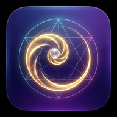
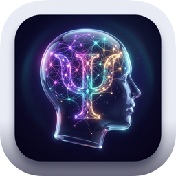
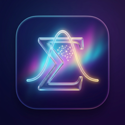

Numina
Everyday math
Math you can see, from counting to algebra, with interactive labs tied to real life.
Open Numina →
Anima
Psychology
Psychology and clinical thinking, with case work, an effects library and hands-on labs.
Open Anima →
Sigmind
Statistics
Statistics from zero, built for reading and judging research.
Open Sigmind →